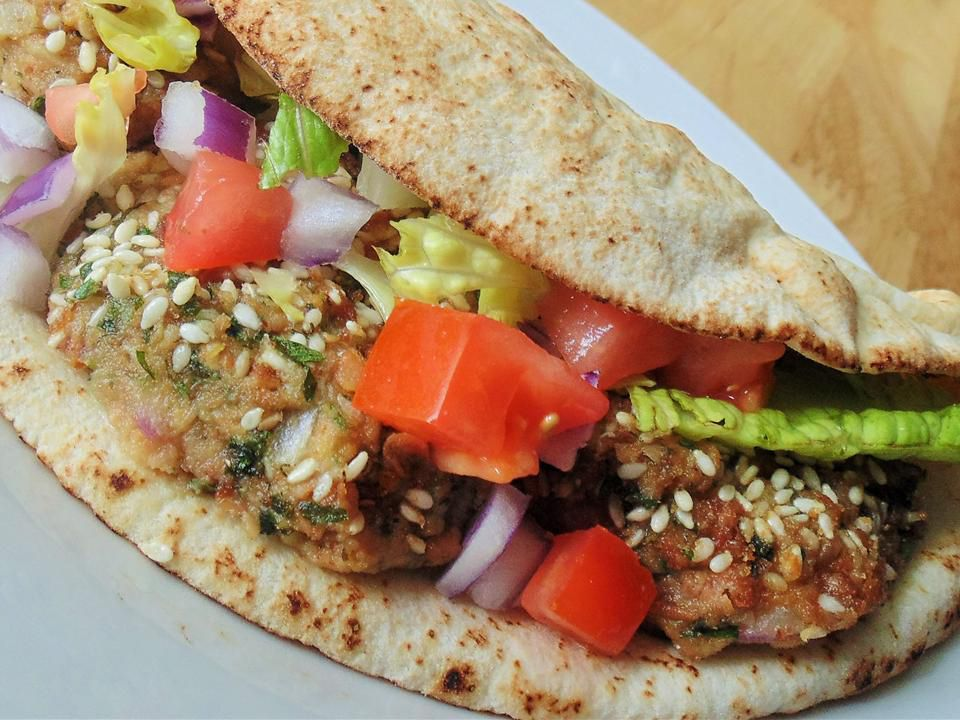

Falafel, or ta'ameya as we call it in Egypt, is an all-time favorite street food. In most parts of the Middle East, falafel is made with ground chickpeas. However, in Egypt, we make it with dried fava beans. They are best served with pita bread, tomato, onions, and tahini sauce.